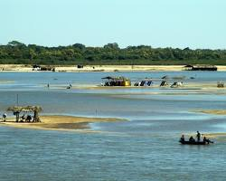
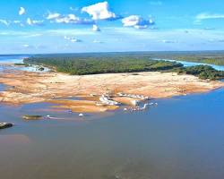

Araguacema é uma cidade encantadora situada às margens do Rio Araguaia, no estado do Tocantins. Com uma
atmosfera acolhedora e um cenário natural de tirar o fôlego, Araguacema é o destino perfeito para quem
busca tranquilidade e contato direto com a natureza. Fundada em 1895, a cidade é rica em história e
cultura, e suas belezas naturais atraem visitantes de todos os cantos do Brasil. Se você está planejando
uma viagem para Araguacema, prepare-se para se surpreender com as maravilhas que esta cidade tem a
oferecer.
Araguacema está localizada a aproximadamente 300 km de Palmas, a capital do Tocantins. O acesso à cidade
pode ser feito pela TO-342, que se conecta à TO-080, oferecendo um trajeto tranquilo e bem sinalizado.
Para quem vem de outras regiões do Brasil, a cidade mais próxima com aeroporto é Palmas. De lá, é
possível alugar um carro ou pegar um ônibus para Araguacema. A viagem é uma ótima oportunidade para
apreciar as paisagens do cerrado e do Rio Araguaia, que acompanham boa parte do trajeto.
O clima em Araguacema é tropical, com uma estação chuvosa que vai de outubro a abril e uma estação seca
de maio a setembro. A melhor época para visitar a cidade é durante a estação seca, quando as estradas
estão em melhores condições e as atividades ao ar livre podem ser aproveitadas ao máximo. É também nesse
período que as praias fluviais surgem, oferecendo um espetáculo natural que atrai muitos turistas.
As praias do Rio Araguaia são as maiores atrações de Araguacema, especialmente durante os meses de julho
a setembro, quando o nível do rio diminui e as praias surgem. Com areias brancas e águas claras, essas
praias são perfeitas para quem quer relaxar, tomar sol e se refrescar. A Praia da Gaivota é uma das mais
famosas, conhecida por sua infraestrutura que inclui barracas que servem petiscos e bebidas típicas.
Além de nadar, os visitantes podem praticar esportes aquáticos como caiaque e stand-up paddle. As praias
do Rio Araguaia proporcionam uma experiência única de lazer em um cenário natural impressionante.
A Cachoeira da Fumaça é uma das atrações mais procuradas pelos turistas que visitam Araguacema.
Localizada a cerca de 40 km do centro da cidade, essa cachoeira impressiona pela força de sua queda
d’água, que cria uma névoa ao cair, justificando o nome “Fumaça”. A cachoeira é cercada por uma mata
preservada, o que proporciona um ambiente fresco e agradável, ideal para trilhas e caminhadas. Os
visitantes podem se banhar nas águas cristalinas da cachoeira e desfrutar da tranquilidade do lugar. É
uma experiência que combina aventura e contemplação da natureza.
O Monumento ao Pioneiro é uma homenagem aos primeiros colonizadores que ajudaram a fundar e desenvolver
Araguacema. Localizado em uma das principais avenidas da cidade, o monumento simboliza a coragem e a
determinação dos pioneiros que enfrentaram desafios para estabelecer suas vidas na região. Além de ser
um símbolo da cidade, o monumento é um ponto turístico interessante para quem deseja aprender mais sobre
as origens de Araguacema e valorizar a história local.

TURISMO
TOCANTINS
© 2026 Turismo Tocantins - Todos os direitos reservados.